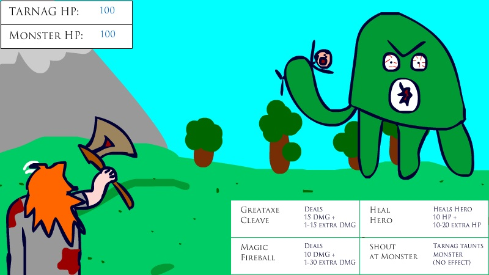

Saviour of Katar was my first serious project as a Bachelor of ICT student. Complete with an agile plan guiding my actions and forcing me to commit to deadlines, I was challenged in ways unlike I had ever been before. Upon completion and assessment, I was given a grade of 39/40 (A+) for this project.
The game is inspired from my love of simple turn-based strategy games, such as Nintendo's Pokemon and Final Fantasy series. Being able to manage your resources, in this case, health points, is a valuable skill for any young person to learn, and combined with the need to carefully balance efficiency and risk-taking through the abilities players choose to use, I had an ideal set of goals in mind.
The project required me to use all sorts of skills and resources that I had never used before, or only very rarely. I had to learn how to use Adobe Flash and Audacity while simultaneously experimenting with Action Script 3. I had all sorts of issues, especially earlier on in the project where I was unable to place any elements on the background (stage). Though disappointed, I pushed through, researched my many error codes and gradually returned my code to a working state. A serious hurdle was the lack of access I had to the software while at home – I was forced to innovate ways to work around this and ensure that all of my time in the lab was spent efficiently. After a short period of time I discovered a trial version of Adobe Flash CS6 was available, which contributed greatly to my flexibility in working on the project.
Saviour of Katar pushed me to my limits at times, both mentally and emotionally, but through hard work and dedication I was able to pull through and produce something I initially never would have dreamed I was capable of. I immensely enjoyed the challenges of working on this project and I feel that I gained many valuable skills that will benefit me substantially in the future. So, without further ado, I present to you: Saviour of Katar!
NOTE: THIS VERSION OF THE GAME HAS HAD ITS QUALITY REDUCED FOR INCREASED PLAYABILITY & LOADING TIMES MAY VARY. PLEASE CLICK HERE TO DOWNLOAD THE ORIGINAL QUALITY SOURCE FILES AND DOCUMENTATION.
© Jessica Petersen. All rights reserved. | Initial Design by TEMPLATED.